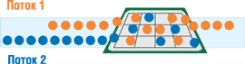
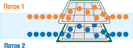
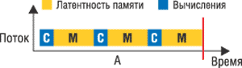
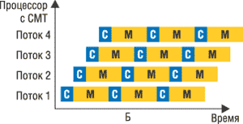
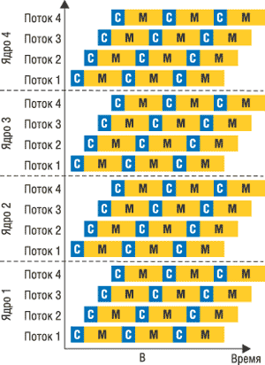
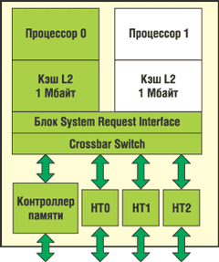
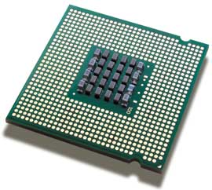

Алексей Борзенко,
к. т. н., доцент РРТА
Как утверждают многие эксперты, в течение ближайших двух лет почти все микропроцессоры, устанавливаемые в настольных ПК, рабочих станциях и серверах, будут иметь два ядра или даже больше. И надо сказать, что основания для таких прогнозов весьма весомые. Производительность двухъядерного процессора может быть почти в два раза выше, чем у одноядерного, а его стоимость будет намного ниже, чем у двух процессоров, имеющих по одному ядру. При размещении двух процессоров на одном кристалле скорость обмена информацией между ними возрастает, а совместное использование кэш-памяти может еще более повысить эффективность обработки данных. Кроме того, двухъядерные процессоры занимают меньше места, потребляют меньше энергии и рассеивают меньше тепла, нежели отдельные процессоры. Добавим еще, что, по имеющейся информации, процессоры на базе нескольких ядер хорошо подходят для обработки транзакций, а также для обслуживания баз данных и научных применений.
Технологии многопоточности
Основные направления развития архитектуры современных микропроцессоров определяются стремлением к увеличению их производительности. Последнюю можно повышать, например, наращивая тактовую частоту и/или увеличивая число команд, выполняемых за один такт. Наращивание тактовой частоты имеет технологические ограничения, а росту производительности подобных суперконвейерных процессоров препятствуют архитектурные барьеры (простои конвейеров, задержки при непопадании в кэш-память и т. п.). Второму пути отвечают суперскалярные процессоры, которые могут выполнять несколько команд за такт за счет использования нескольких функциональных исполнительных устройств. Однако реальные коды программ не обеспечивают эффективную загрузку процессоров, поэтому исполнительные устройства часто простаивают.
Одно из решений данной проблемы связано с реализацией концепции "параллелизма на уровне тредов" TLP (Thread Level Parallelism). Если программные коды не в состоянии загрузить работой все или даже большинство функциональных устройств, то можно разрешить процессору выполнять более чем одну задачу (тред, или поток), чтобы дополнительные потоки загрузили простаивающие устройства. Здесь нетрудно усмотреть аналогию с многозадачной ОС: чтобы процессор не простаивал, когда задача оказывается в состоянии ожидания (например, завершения ввода-вывода), ОС переключается на выполнение другой задачи. Более того, некоторые механизмы диспетчеризации в ОС (например, квантование) имеют аналоги в многопотоковой архитектуре (MTA - MultiThreading Architecture). Очевидно, архитектура, поддерживающая TLP, должна гарантировать, что треды не будут использовать одновременно одни и те же ресурсы, для чего требуются дополнительные аппаратные средства (например, дублирование регистровых файлов). Однако оказалось, что можно реализовать МТА на базе современных суперскалярных процессоров, и это требует лишь относительно небольших аппаратных доработок, что резко повышает привлекательность МТА в глазах проектировщиков.
При использовании базового типа TLP в микропроцессоре имеется не менее двух аппаратных контекстов тредов. Контекст включает, в частности, регистры общего назначения, счетчик команд, слово состояния процесса и т. п. В любой момент времени работает только один тред - тот, чей контекст активен. Он выполняется до возникновения определенной ситуации (например, выполнения команды загрузки регистра при отсутствии данных в кэш-памяти). В этом случае процессор заменяет контекст треда на контекст другого треда и начинает выполнение последнего. Поскольку при непопадании в кэш-память операции с памятью могут потребовать до сотни тактов процессора, его простои по причине ожидания данных могли бы быть весьма значительными. Современные процессоры, имеющие возможности спекулятивного внеочередного выполнения команд, в подобной ситуации могут продолжить выполнение других команд, но на практике число независимых команд быстро исчерпывается и процессор останавливается.
Наиболее продвинутой стала архитектура с одновременным выполнением тредов - SMT (Simultaneous Multi-Threading). Само ее название указывает на допустимость одновременного выполнения нескольких потоков. В этом случае на каждом новом такте на выполнение в какое-либо исполнительное устройство может направляться команда любого потока. По сравнению с суперскалярными процессорами, поддерживающими внеочередное спекулятивное выполнение команд и использующими механизм переименования регистров, для SMT необходимы, в частности, следующие аппаратные средства:
- несколько счетчиков команд (по одному на поток) с возможностью выбора любого из них на каждом такте;
- средства, ассоциирующие команды с потоком, которому они принадлежат (необходимы, в частности, для работы механизмов предсказания переходов и переименования регистров);
- несколько стеков адресов возврата (по одному на поток) для предсказания адресов возврата из подпрограмм;
- специальная дополнительная память в процессоре (в расчете на каждый поток) для процедуры удаления из буфера выполненных вне очереди команд.
Одна из основных особенностей SMT у многих современных процессоров - переименование регистров, когда логические (архитектурные) регистры отображаются в физические, с которыми и ведется реальная работа. Техника переименования регистров может, очевидно, применяться для того, чтобы избежать прямого дублирования файлов регистров как части аппаратного контекста потока.
Технология Hyper-Threading (HT) была создана корпорацией Intel (http://www.intel.com) в целях повышения производительности и эффективности серверных систем. Она дополнила традиционную многопроцессорность, обеспечивая более высокий параллелизм и запас производительности для ПО с поддержкой тредов. Вообще говоря, HT стала одной из форм синхронной многопотоковой технологии SMT, где множество потоков, создаваемых программными приложениями, могут выполняться одновременно на одном процессоре (рис. 1). Это достигается за счет дублирования архитектурного состояния при совместном использовании единого набора ресурсов процессора. Архитектурное состояние контролирует последовательность выполнения программы или треда, а ресурсы, необходимые для их выполнения, являются функциональными модулями процессора, реализующими то или иное действие: сложение, перемножение, загрузку и т. п.
|  | Рис. 1. Обработка потоков в процессоре Intel Pentium 4 с технологией HT.
|
При диспетчеризации тредов ОС воспринимает два отдельных архитектурных состояния как два "логических" процессора. Программные приложения, способные работать с несколькими процессорами, могут без изменений выполняться на удвоенном числе логических процессоров, имеющихся в системе. Каждый логический процессор отвечает на прерывания независимо от других. Первый логический процессор может отслеживать потоки одной программы, в то время как второй логический процессор занимается потоками другой программы.
Поскольку оба процессора совместно используют единый набор ресурсов исполнения, второй тред может задействовать ресурсы, которые при обработке одного треда находились бы в простое. Результатом этого становится увеличение загрузки ресурсов исполнения в пределах каждого физического процессора. Такое улучшение использования ресурсов процессора приводит и к повышению пропускной способности при обработке многопоточных приложений. Например, один логический процессор может выполнять операции с плавающей точкой, а второй в то же время выполняет сложение и операцию загрузки.
Новых схем HT привносит совсем немного - в основном это дублирование регистров и назначение ресурсов потокам. При этом дублируются как видимые, так и внутренние (физические) регистры. Начальные стадии конвейера не меняются, однако атрибуты (биты, указывающие на принадлежность к определенному потоку), конечно же, присутствуют. Исполнительное ядро, включая все исполнительные устройства, также не изменяется - эти ресурсы разделяются между двумя потоками. Блок процессора, отвечающий за восстановление архитектурного состояния на основании выполненных внеочередным, спекулятивным образом микроопераций, работает последовательно (по потокам). Среди добавленных в процессор компонентов стоит упомянуть средства APIC (Advanced Programmable Interrupt Controller) - назначение прерываний для обработки разными процессорами в мультипроцессорной системе.
Технология HT расширяет возможности мультипроцессорных систем, поскольку ОС может запланировать одновременное выполнение отдельных тредов не только на каждом физическом процессоре, но и одновременно на каждом логическом процессоре. Это улучшает общие характеристики системы, поскольку многочисленные треды могут быть отправлены на исполнение быстрее, учитывая, что системе доступно в два раза больше логических процессоров. При этом все они по-прежнему совместно используют один набор ресурсов для выполнения программ, поэтому применение еще одного физического процессора со своим собственным выделенным набором ресурсов выполнения в общем случае позволяет достичь более высоких уровней производительности (рис. 2). HT расширяет возможности многопроцессорности, обеспечивая более высокую степень параллелизма в расчете на каждый процессор, доступный системе.
|  | Рис. 2. Обработка потоков в двухъядерном процессоре Intel.
|
IBM шагает впереди
В 2001 г. корпорация IBM (http://www.ibm.com) разработала свой первый универсальный двухъядерный (dual-core) процессор POWER4, предназначенный для серверов IBM eServer линеек pSeries и iSeries. Устройство POWER4 было уникально хотя бы тем, что в нем даже один кристалл - это уже мультипроцессорная система: в одном корпусе содержалось два 64-разрядных микропроцессора. Собственно, архитектуру кристалла POWER4 отличало несколько современных решений: суперскалярная структура, внеочередное исполнение команд, большая кэш-память на кристалле, специализированный порт для основной памяти, а также высокоскоростные линки для объединения микропроцессоров в системы с архитектурой распределенной разделяемой памяти. Каждый процессор POWER4 имел два конвейерных блока для работы с 64-разрядными операндами с плавающей точкой, выбирающих на исполнение по пять команд каждый, и два блока для работы с памятью. Процессоры содержали раздельную кэш-память команд и данных 1-го уровня емкостью по 64 Кбайт каждая. Кроме того, имелась разделяемая (общая) кэш-память 2-го уровня на кристалле (емкостью 1,4 Мбайт) и внешняя кэш-память 3-го уровня (емкостью 32 Мбайт). Совместный доступ к внешней кэш-памяти выполнялся по технологии DSI (Distributed Switch Interconnect).
Одной из отличительных особенностей POWER4 стало наличие кэш-памяти 2-го уровня, разделяемой двумя процессорами кристалла, а также внешними процессорами других кристаллов через линки шириной 128 разрядов, работающие на тактовой частоте более 500 МГц (что обеспечивает пропускную способность свыше 10 Гбайт/с). При объединении четырех кристаллов и их специальном размещении проводники линков могли быть достаточно короткими и прямыми, что важно при работе на высоких тактовых частотах.
Физически кэш-память 2-го уровня емкостью около 1,4 Мбайт состояла из нескольких одинаковых блоков, доступ к которым выполнялся через коммутатор с пропускной способностью на уровне 100 Гбайт/с. Протокол когерентности обеспечивал размещение данных, поступивших по линкам, в том блоке кэш-памяти, который использовался для размещения данных последним. Порт кристалла POWER4, предназначенный для подключения кэш-памяти 3-го уровня емкостью до 32 Мбайт, имел ширину 128 разрядов для каждого из двух направлений пересылки данных. Порт функционировал не на полной тактовой частоте процессоров кристалла, но тем не менее при передаче обеспечивал пропускную способность на уровне 13-14 Гбайт/с. Теги кэш-памяти 3-го уровня были расположены внутри кристалла, что ускоряло реализацию протокола когерентности. Скорость передачи данных между кэш-памятью 3-го уровня и основной памятью могла достигать 12,8 Гбайт/с.
Каждый сдвоенный процессор POWER4 был упакован в керамический мультипроцессорный модуль (размером 4,5х4,5 дюйма) вместе с тремя другими кристаллами. Эта базовая строительная единица называлась MCM (MultiChip Module). Такой модуль, содержащий четыре микросхемы POWER4, в итоге объединял восемь процессоров. Многослойный керамический корпус модуля MCM содержал магистрали, соединяющие микросхемы между собой, а также с модулями кэш-памяти и высокоскоростным коммутатором для связи с удаленными процессорами. Четыре микросхемы POWER4, образующие восьмипроцессорную конфигурацию, были расположены в МСМ под углом 90° друг относительно друга, что позволяло минимизировать длину шин расширения, соединяющих микросхемы между собой. Шины расширения связывали между собой и модули МСМ. В этих шинах использовалась уникальная технология волновой конвейеризации (wave pipelining), обеспечивающая очень низкие величины задержек.
Стоит отметить, что наряду с параллелизмом на уровне команд процессор POWER4 использовал и параллелизм на уровне тредов. Базовая многопоточность использовалась еще в процессорах PowerPC RS IV (S-Star) - в этом случае в каждый момент времени выполнялся только один поток команд, но если при выполнении команды этого потока возникала значительная задержка (например, в кэше отсутствовали необходимые данные), то процессор переключался на другой поток, что уменьшало его простаивание. Однако оба потока совместно использовали многие системные ресурсы (например, архитектурные регистры), поэтому на переключение между потоками тратилось несколько тактов.
Динамическое выявление параллелизма в POWER4 позволяло предотвращать простои процессора при трудно выявляемых статически исключительных ситуациях, например, при промахе в кэш-памяти. Хотя каждое из двух процессорных ядер выполняло свой поток команд, все же при задержке выполнения одного потока ресурсы обслуживающего его ядра нельзя было передать другому потоку.
Одновременная многопоточность SMT, при которой процессорное ядро может запрограммировать порядок параллельного выполнения команд из нескольких потоков, впервые появилась только в POWER5. Как известно, технология SMT позволяет системе динамически подстраиваться - если возникает длительная задержка при выполнении команды одного треда, то все ее исполнительные блоки временно передаются другому потоку. Теоретически SMT можно реализовать не только для двух, но и для большего числа потоков, однако разработчики POWER5, видимо, посчитали, что это слишком усложнит механизм многопоточности, но не даст серьезного выигрыша в производительности.
В POWER5 каждое процессорное ядро может одновременно обрабатывать два потока команд, т. е. работает как два логических процессора, а сам кристалл - как четыре логических процессора. Команды обоих потоков извлекаются из одной и той же кэш-памяти команд 1-го уровня и вместе загружаются в исполнительные блоки. Теоретически оба потока команд после считывания из кэш-памяти команд должны проходить через конвейер и использовать ресурсы физического процессора без конфликтов между потоками. В этом случае применение SMT удваивает производительность процессора. Однако если между потоками возникнет конфликт из-за ресурсов процессора, то одному из них придется ждать, и прирост производительности оказывается меньше 100%.
SMT организует выполнение команд из потоков следующим образом. Несколько команд из каждого потока можно загрузить в набор конвейеров в течение каждого такта, причем любые пять команд из обоих потоков, представляющие до двух операций загрузки и сохранения, двух операций двоичной арифметики, двух операций с плавающей точкой и ветвление, допустимо загрузить в один конвейер в течение одного такта. За один такт по стадиям конвейера проходит только одна команда из одного из потоков. Физический процессор определяет порядок выполнения команд на основе набора правил с учетом зависимости операндов, времени ожидания обработки команд и необходимости внеочередного выполнения некоторых команд.
Каждый физический процессор содержит кэш-память данных и команд 1-го уровня, которые совместно используются обоими логическими процессорами. Как говорилось выше, кэш-память 2-го уровня у физических процессоров (ядер) POWER5 общая, поэтому она совместно используется четырьмя потоками команд. Для улучшения производительности SMT при выполнении различных приложений в POWER5 реализованы динамическая балансировка ресурсов и подстраиваемый приоритет потоков.
Многоядерные SPARC
В начале 2004 г. Sun Microsystems (http://www.sun.com) выпустила оснащенный двумя ядрами процессор UltraSparc IV для серверов Sun Fire V, а уже осенью представила проект процессора нового поколения - UltraSPARC IV+ (Panther). Он выполнен на базе технологии CMT (Chip Multithreading - многопотоковость на кристалле, рис. 3) и знаменует собой очередной шаг в реализации стратегии Throughput Computing ("высокая пропускная способность"). UltraSPARC IV+ разработан на базе 90-нм производственной технологии Texas Instruments. По сравнению с процессором UltraSPARC IV он позволяет удвоить производительность приложений благодаря увеличению объема кэш-памяти и буферов, улучшенному механизму прогнозирования ветвления, расширенным возможностям упреждающей выборки из памяти и новым вычислительным возможностям. Кроме того, в UltraSPARC IV+ применяется новая трехуровневая иерархия кэш-памяти, включающая интегрированную на кристалле кэш-память 2-го уровня объемом 2 Мбайт и внешнюю кэш-память 3-го уровня объемом 32 Мбайт.
|  | Рис. 3. Работа обычного процессора без CMT (а) и обработка потоков в одноядерном (б) и многоядерном (в) процессоре с технологией CMT.
|
|  | |
|  |
Подобно UltraSPARC IV, новый процессор имеет два ядра, интегрированных на одном кристалле. Однако интерфейс памяти у него изменился: UltraSPARC IV+ будут поддерживать память DDR DRAM, тогда как нынешние варианты кристаллов работают с менее скоростной памятью SDRAM.
Кроме новых функций увеличения производительности, процессор UltraSPARC IV+ имеет значительно более высокую тактовую частоту (первоначально 1,8 ГГц), что обеспечивает наивысшую пропускную способность по сравнению с другими моделями процессоров UltraSPARC. По сравнению с UltraSPARC IV производительность каждого потока выросла примерно вдвое. В то же время наличие целого ряда средств повышения надежности, работоспособности и удобства обслуживания позволяет назвать этот процессор самым надежным среди всех моделей UltraSPARC. Так же, как процессор UltraSPARC IV, новый UltraSPARC IV+ обеспечивает бинарную совместимость с предыдущими поколениями процессоров архитектуры SPARC. Благодаря этому пользователи сохранят инвестиции в средства разработки и прикладное ПО. Кроме того, пользователям будет легко модернизировать существующие системы, повысив их производительность и надежность, - новые процессоры могут устанавливаться в существующие системы семейства Sun Fire и работать вместе с уже установленными в системе процессорами UltraSPARC IV и UltraSPARC III. Основа системы не изменится, может потребоваться только замена блока питания или системы охлаждения.
Проект Niagara - главная часть работы Sun, нацеленной на сохранение актуальности семейства процессоров SPARC на фоне широкой популярности архитектуры х86 от Intel и AMD и растущей мощности процессоров POWER от IBM. Выпуск кристаллов Niagara планируется на 2006 г. и должен стать еще одной демонстрацией преимуществ технологии CMT. В более долгосрочной перспективе, в 2008 г., планируется выпустить второе поколение процессора Niagara II и микросхемы с кодовым названием Rock.
Другая часть стратегии Sun Microsystems связана с партнерством с корпорацией Fujitsu с целью совместной разработки серверов на базе ее будущего процессора SPARC64 VI (Olympus). При разработке нового процессора Fujitsu пошла по хорошо проторенной дорожке: SPARC64 VI несет на одном кристалле два ядра с архитектурой SPARC64 V, представленной компанией год назад и за это время успевшей себя хорошо зарекомендовать в производительных серверах PrimePower корпорации Fujitsu Siemens Computers. В настоящее время Fujitsu изготавливает процессоры SPARC V+ (с повышенным быстродействием) по технологическому процессу 90 нм, что означает возможность разместить больше элементов на той же площади кристалла. Такие кристаллы работают с тактовой частотой 1,89-2,16 ГГц и оснащены встроенной кэш-памятью объемом 3-4 Мбайт, тогда как у предыдущих моделей SPARC64 V, выполненных с учетом проектных норм 130 нм, тактовая частота составляла 1,35 ГГц, а объем кэш-памяти - 2 Мбайт. Стоит отметить, что будущие кристаллы SPARC VI будут работать на тактовых частотах не ниже 2,39 ГГц и иметь объем встроенной кэш-памяти до 6 Мбайт. Они будут оснащаться развитыми средствами повышения надежности и использоваться в семействе серверов с числом процессоров до 128.
Многоядерные решения AMD
Ответ со стороны компании Advanced Micro Devices (http://www.amd.com) последовал летом 2004 г. В конце августа общественности был продемонстрирован оснащенный двумя ядрами 64-разрядный процессор AMD Opteron (с поддержкой системы команд x86). На демонстрации, состоявшейся в офисе корпорации в Остине, был представлен сервер HP ProLiant DL585 с четырьмя двухъядерными процессорами Opteron, изготовленными по технологии "кремний на изоляторе" (SOI) с соблюдением проектных норм 90 нм. По словам представителей корпорации, переход в новую, более эффективную среду вычислительной обработки, основанную на существующей инфраструктуре систем AMD и стандартной архитектуре, достаточно прост, и корпоративные клиенты могут рассчитывать на увеличение вычислительных мощностей без издержек в виде повышенного энергопотребления или тепловыделения. Ожидается, что двухъядерный процессор AMD Opteron для серверов и рабочих станций, широкий выпуск которого планируется в середине нынешнего года, будет обладать наилучшей производительностью в расчете на ватт мощности среди аналогичных продуктов на рынке.
Надо сказать, что AMD заложила фундамент для создания процессоров с двумя ядрами еще несколько лет назад, когда снабдила свои одноядерные процессоры AMD64 встроенной инфраструктурой, пригодившейся сейчас для поддержки второго ядра на той же микросхеме. По словам одного из экспертов, двигаясь от теории двухъядерных технологий к практике, AMD убеждается в том, что нынешние инвестиции в логику ядра и технологию платформы будут приносить пользу на протяжении долгого времени.
Двухъядерные процессоры (рис. 4) представляют собой естественное расширение технологии AMD64 с архитектурой прямых соединений. AMD не только первой среди всех компаний удалось устранить узкие места в работе внешней шины, характерные для архитектуры x86; она также первой успешно объединила два ядра на одном кристалле вместе с контроллером памяти, подсистемой ввода-вывода и другими процессорами - это позволит улучшить общесистемную производительность и повысить эффективность обработки.
|  | Рис. 4. Блок-схема двухъядерного процессора Opteron.
|
Архитектура Direct ConnectАрхитектура Direct Connect позволяет подключить несколько процессоров, контроллер памяти и модули ввода-вывода напрямую. Она нейтрализует недостатки современных системных архитектур и устраняет узкие места при обмене данными. Считается, что данная архитектура сокращает задержки при обращении к памяти; а поскольку средства ввода-вывода непосредственно подключаются к центральному процессору, улучшается баланс между производительностью процессора и пропускной способностью подсистемы ввода-вывода. В свою очередь, все процессоры соединяются непосредственно друг с другом, что обеспечивает практически линейное повышение производительности для симметричных многопроцессорных систем.
|
Очередная демонстрация возможностей двухъядерных процессоров AMD64 состоялась на конференции LinuxWorld в Бостоне (шт. Массачусетс, США) на примере четырех систем с двухъядерными процессорами AMD Opteron. Этими системами стали суперкомпьютер Cray XD1, рабочая станция HP xw9300 с двумя двухъядерными процессорами Opteron и технологией NVIDIA SLI dual PCI Express, сервер HP ProLiant DL585 с четырьмя двухъядерными процессорами и сервер Sun Fire V40z, также с четырьмя двухъядерными процессорами.
По словам одного из руководителей корпорации, двухъядерные процессоры будут востребованы корпоративными клиентами в первую очередь благодаря своей высокой удельной мощности при низком энергопотреблении. Технологические образцы двухъядерных процессоров AMD Opteron начали поступать в распоряжение партнеров компании в январе этого года, а выпуск полной гаммы таких процессоров для одно-, двух-, четырех- и восьмипроцессорных серверов намечен на середину 2005 г. Все процессоры рассчитаны на стандартный 940-контактный разъем (Socket 940). Именно за счет этого должна достигаться повышенная отдача от инвестиций - ведь существующие процессоры AMD Opteron, изготовленные по процессу 90 нм, также рассчитаны на разъем Socket 940.
Двухъядерные процессоры AMD64 совместимы с приложениями AMD64 для платформы x86, и многие ведущие разработчики ПО, включая Microsoft, Novell, Red Hat и Sun Microsystems, последовали рекомендациям AMD и пересмотрели свои схемы лицензирования, привязав их к числу физических процессоров. Это должно упростить массовое распространение многоядерных процессоров.
В конце февраля AMD уже продемонстрировала очередную новинку - двухъядерный процессор AMD Athlon 64, изготовленный по технологии 90 нм. Корпорация планирует начать массовый выпуск двухъядерных процессоров AMD64 (разъем Socket 939) для клиентских систем во второй половине 2005 г.
Многоядерное будущее с Intel
На весеннем Форуме Intel для разработчиков руководство корпорации рапортовало о завершении пилотного этапа выпуска процессоров с двумя ядрами (рис. 5) и обнародовало планы производства многоядерных процессоров. В общей сложности речь шла о 15 многоядерных проектах, которые полным ходом идут в корпорации Intel и рассчитаны на серверы, рабочие станции, настольные ПК, мобильные и сетевые платформы. Подчеркивалось, что многоядерные процессоры станут действительно движущими силами платформ Intel для цифрового дома и офиса, мобильных и корпоративных платформ. Благодаря им у пользователей появится широкий спектр новых возможностей для одновременного выполнения нескольких задач.
|  | Рис. 5. Двухъядерный процессор Intel.
|
Надо отметить, что Intel довольно давно работает над концепцией параллелизма и аппаратными средствами реализации многопоточности. Так, к 1994 г. в процессоре Intel Pentium уже был реализован параллелизм на уровне команд - архитектурная особенность, при которой команды одного потока кода извлекаются, выполняются параллельно, а затем объединяются в прежнем порядке. В 1994 г. корпорация реализовала двухпроцессорную обработку (два полноценных процессора, вставляющихся в два разъема системной платы), создав аппаратную многопоточную среду для серверов и рабочих станций. В 1995 г. был представлен процессор Pentium Pro, поддерживавший эффективное объединение уже четырех процессоров на одной системной плате, что обеспечило более высокую скорость обработки данных в многопоточных приложениях, ориентированных на серверные платформы и рабочие станции.
Эти усилия стимулировали разработку однопроцессорных технологий, обеспечивающих более высокую степень параллелизма на уровне потоков, для массовых платформ. В начале нынешнего века корпорация реализовала технологию HT в микроархитектуре Intel NetBurst (для процессоров Pentium 4 и Xeon) как инновационный способ достижения более высокой степени параллелизма на уровне потоков в процессорах для массовых систем. В корпорации поняли, что технология HT естественным образом ведет к разработке многоядерных процессоров, отличающихся более высокими степенями параллелизма.
Для перевода своей полупроводниковой индустрии на выпуск многоядерных процессоров с 2000 г. Intel вложила более 35 млрд долл. в исследования и разработки по этой тематике. Сегодня у Intel 11 фабрик, изготавливающих микропроцессоры, на четырех из них выпускаются подложки диаметром 300 мм. Из таких больших подложек выходит в 2,5 раза больше кристаллов, чем получалось раньше из подложек диаметром 200 мм; благодаря этому стоимость производства одной микросхемы снижается на 30%. Уже выпущены десятки миллионов процессоров по технологическому процессу 90 нм, и в этом году начнется их производство с соблюдением проектных норм 65 нм.
По прогнозам, в 2006 г. двухъядерные процессоры будут использоваться в 70% настольных компьютеров и ноутбуков и в 85% серверов. В ПК и серверах будущего будут применяться двухъядерные и многоядерные процессоры Intel, поддерживающие такие инновационные технологии, как ускоренный ввод-вывод, виртуализация, безопасность и усовершенствованная технология памяти.
Технология ускорения ввода-выводаТехнология ускорения ввода-вывода I/OAT (Intel I/O Acceleration Technology) появилась в то время, когда потребности приложений (таких, как электронная коммерция, обмен сообщениями, приложения для кластеров устройств хранения данных и серверов) начали обгонять способность серверов к реагированию и их возможности в части быстрого и надежного обмена сетевыми данными с приложениями. В то время как производительность серверных процессоров и пропускная способность сетей за последние годы значительно выросли, основной метод обмена данными остался прежним. Сегодня вся тяжесть обработки данных, доступа к памяти и реализации протоколов обмена для каждого пакета данных лежит на серверном процессоре. В результате работа серверных приложений замедляется, а время отклика, надежность и удобство работы перестают отвечать потребностям пользователей. Для решения этой проблемы в технологии ускорения ввода-вывода Intel применяется общеплатформенный подход. Задача управления данными распределяется между всеми компонентами платформы - процессором, набором микросхем, сетевым контроллером и ПО. Общеплатформенный подход позволяет снизить нагрузку на процессор и ускорить обмен данными. Загруженность процессора снижается благодаря тому, что набор микросхем и сетевой контроллер получают возможность считывать данные из памяти и записывать их в память. Intel также оптимизировала протокол TCP/IP - открытый "свод правил", который позволяет компьютерам всех типов обмениваться данными, общаясь на одном языке. В результате загруженность процессоров в серверах архитектуры Intel снизилась наполовину, а вычислительные ресурсы высвободились для решения других задач. В среднем такой подход позволяет ускорить обмен данными между платформой и приложениями на 30% и освобождает процессор для выполнения другой вычислительной работы. Кроме того, подход, применяемый в технологии I/OAT, позволяет отказаться от искусственных надстроек, применяемых в существующих технологиях, - таких, как механизмы разгрузки TCP (TCP offload engine, TOE). Как известно, TOE - это специализированные дорогостоящие микросхемы, предназначенные для разгрузки процессора при обработке протокола TCP/IP, но они не решают двух основных проблем, связанных с процессором: снижения системных издержек и организации доступа к памяти. В результате TOE эффективны только для таких приложений, где велика информационная составляющая пакетов данных - например, для высокопроизводительных систем управления базами данных или для хранилищ данных. Корпорация Microsoft обещает обеспечить встроенную поддержку технологии I/OAT в будущих версиях ОС Windows Server. В этих версиях также будет использоваться технология, которая позволяет сбалансировать трафик TCP/IP при использовании многоядерных процессоров.
|
Платформа под кодовым названием Richford будет содержать два процессора Intel Itanium под кодовым названием Tukwila, которые предполагается выпустить в 2007 г., а за ними последуют процессоры Intel Itanium следующего поколения под кодовым названием Poulson.
Первые двухъядерные процессоры Intel Xeon MP (кодовое название Paxville) будут анонсированы в I квартале 2006 г., а масштабные программы предоставления образцов этих процессоров предприятиям и разработчикам ПО стартуют уже в конце 2005 г. Платформа под кодовым названием Reidland будет базироваться на процессорах Intel Xeon MP, содержащих более двух ядер, известных под кодовым названием Whitefield. Эти многоядерные процессоры будут выпущены в 2007 г. Процессоры Intel Xeon MP предназначены для серверов с четырьмя и более процессорами.
Платформа под кодовым названием Bensley, ориентированная на массовые двухпроцессорные серверы, появится в I квартале 2006 г. и будет основана на двухъядерном процессоре Intel Xeon под кодовым названием Dempsey. Процессоры Dempsey также будут использоваться в производительных платформах для рабочих станций (кодовое название Glidewell).
Платформа для цифрового офиса под кодовым названием Lyndon появится позднее в нынешнем году и будет построена на наборах микросхем серии Intel 945/955 и процессорах Pentium 4 5xx/6xx, а также новых двухъядерных процессорах Pentium D (кодовое название Smithfield). Платформа Lyndon будет поддерживать технологии Intel Active Management Technology и Virtualization Technology.
Судьба системной шиныЧтобы в полной мере реализовать потенциал роста производительности, обеспечиваемый несколькими ядрами, необходим способ предоставить процессору достаточное количество данных. По мнению экспертов, существующая архитектура системной шины Intel способна удовлетворить требования максимум четырех ядер, в зависимости от их частоты. В этой архитектуре системная шина связывает центральный процессор с основной памятью. Контроллер памяти, входящий в состав соответствующих наборов микросхем, отвечает за координацию трафика данных при его передаче из памяти в центральный процессор. Некоторые компании, в частности, AMD, Sun Microsystems и IBM, уже интегрировали контроллеры памяти в кристаллы центральных процессоров. Напомним, что интегрированный контроллер памяти сокращает уровень задержки (время, требуемое для передачи порции данных от одного компонента системы другому). По прогнозам аналитиков, Intel в конечном счете должна отказаться от архитектуры системной шины просто для того, чтобы поддерживать производительность процессоров на необходимом уровне. Решение корпорации интенсифицировать разработку своих многоядерных архитектур позволит рано или поздно реализовать эту концепцию. Так, Intel планирует выпустить двухъядерные процессоры в 2005 г., что, как предполагается, позволит сохранить архитектуру системной шины. Но четырехъядерные процессоры, выпуск которых намечен на 2007 г., станут первыми, в которых может быть использован единый системный интерфейс между несколькими такими процессорами. Как полагают, интегрированный контроллер мог бы позволить Intel увеличить производительность серверных приложений, интенсивно использующих память, и обеспечить доставку данных к нескольким ядрам, запланированным для процессоров Xeon и Itanium этого поколения. Фактически процессор Itanium образца 2007 г. может иметь до восьми ядер. Впрочем, эксперты не исключают и иной сценарий. Intel может сохранить свою системную шину за счет добавления к процессорам так называемых модулей арбитража шины, которые обеспечат совместное использование процессорами ресурсов, в том числе средств доступа к памяти или систем ввода-вывода. Ряд производителей уже устанавливает подобные модули в свои многопроцессорные серверы. Во многих серверах с восемью или более процессорами они фактически сгруппированы по четыре. Для Intel не составит большого труда организовать тот же тип архитектуры в процессоре с четырьмя и более ядрами. |